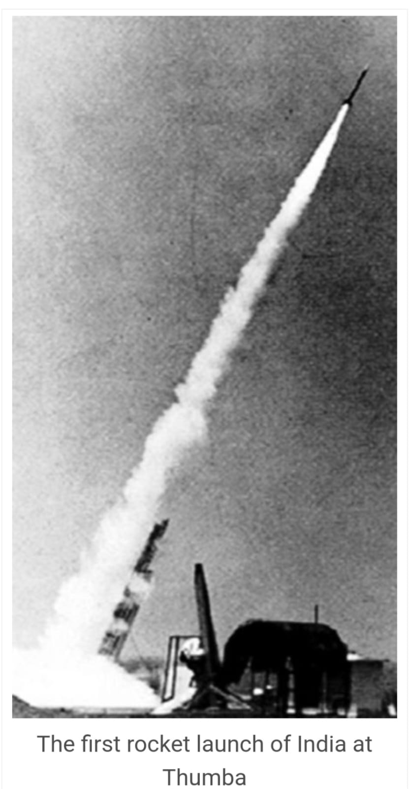
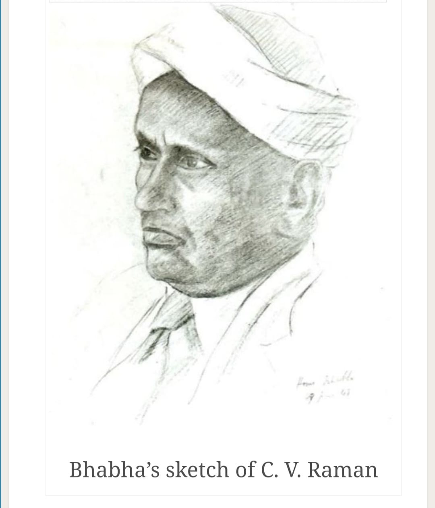
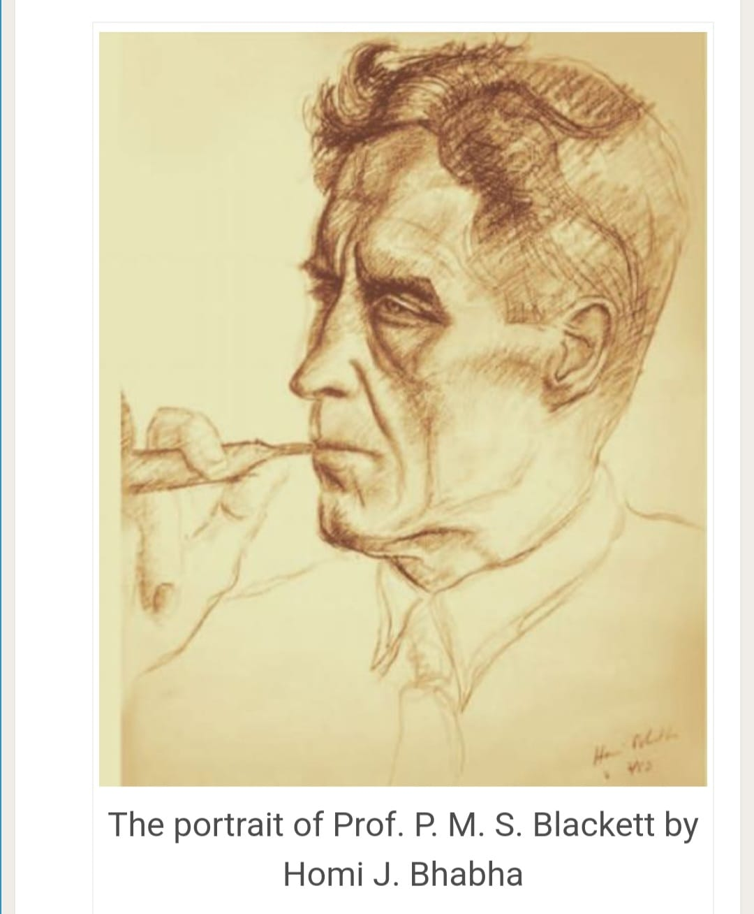
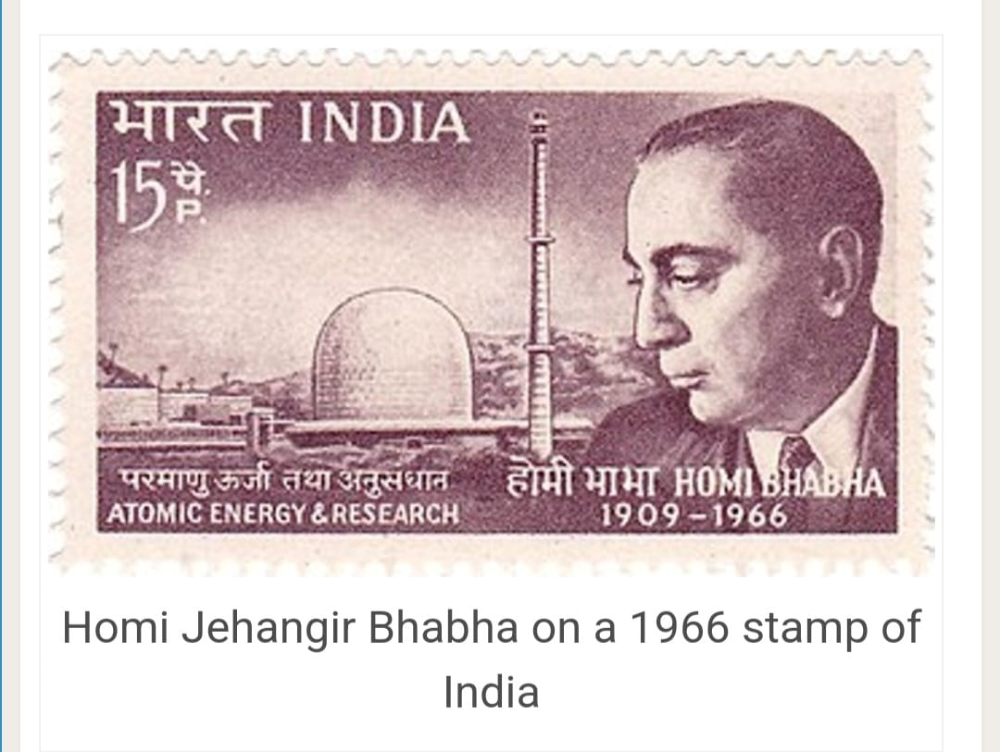
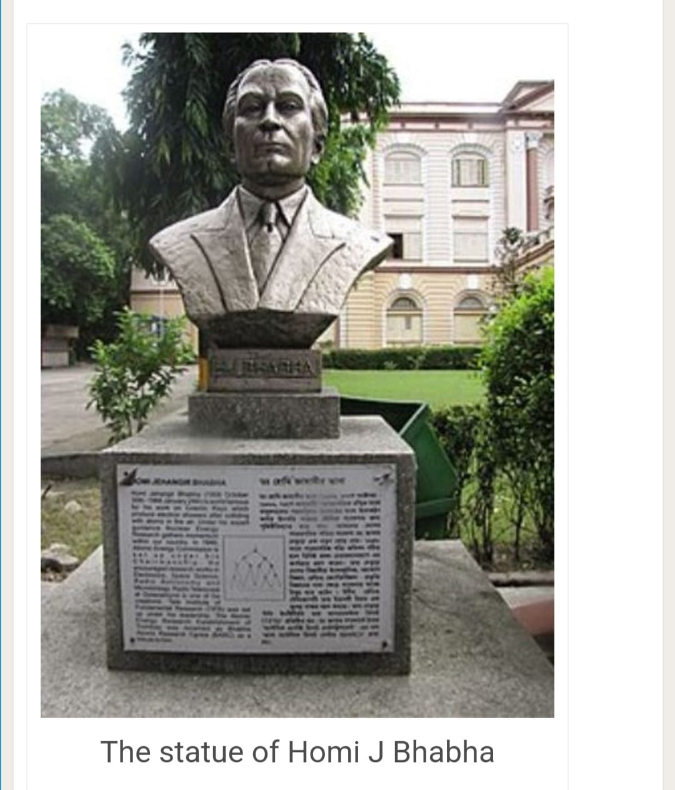
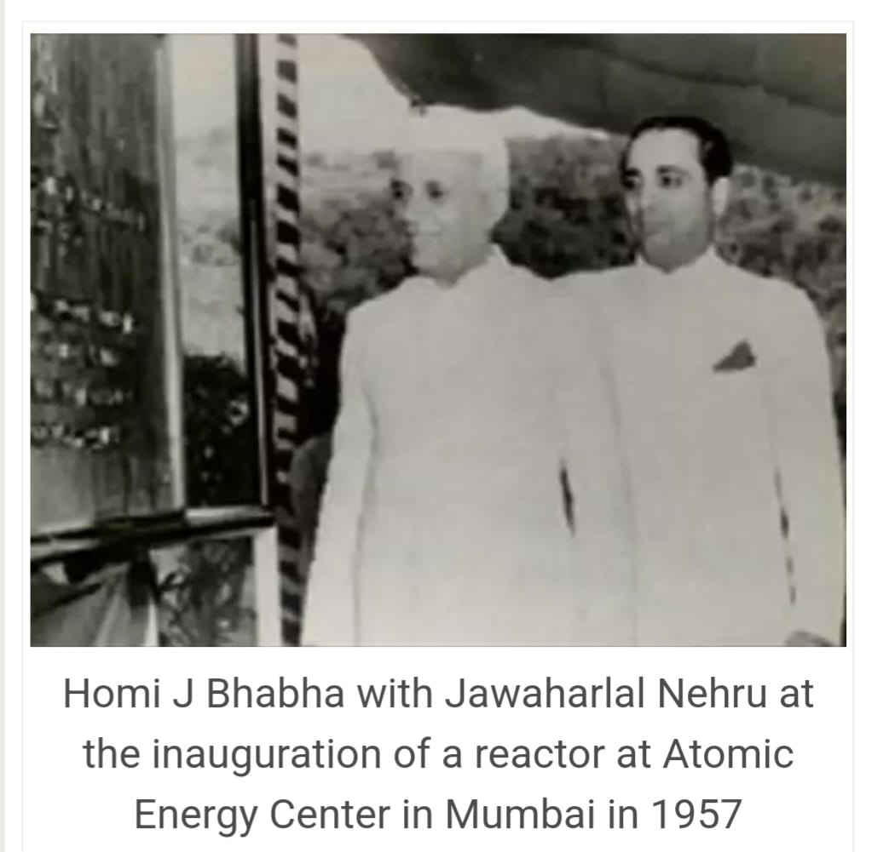
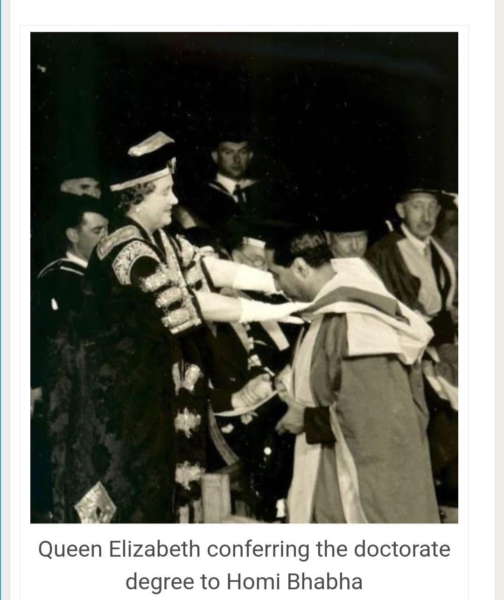
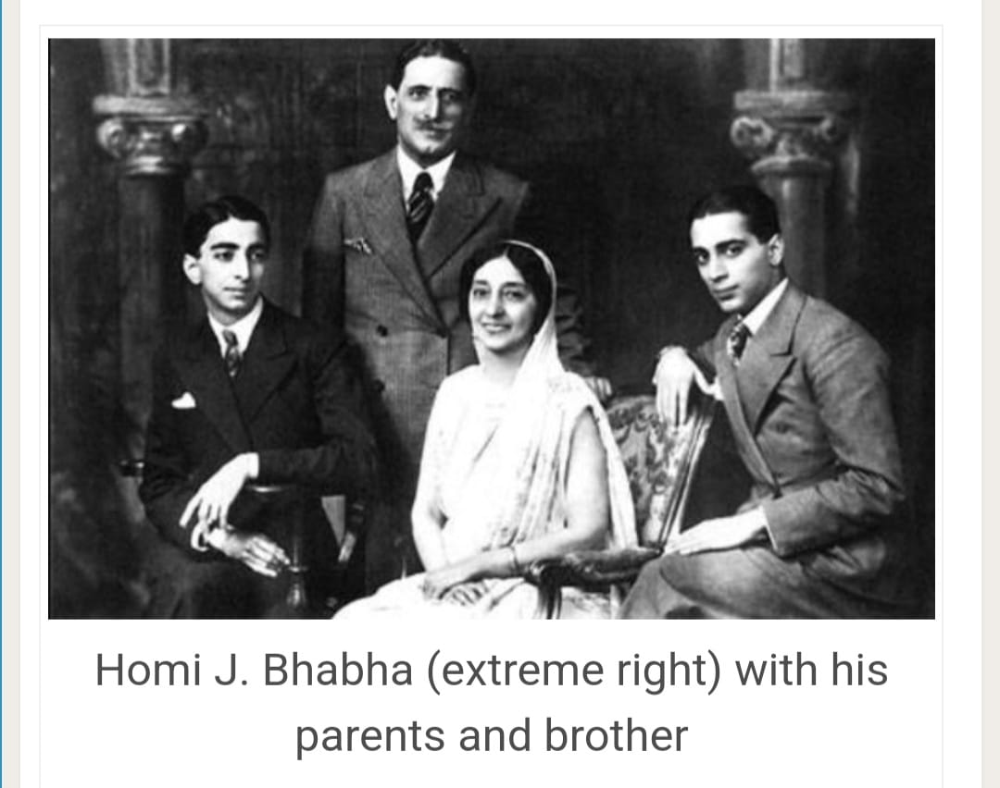
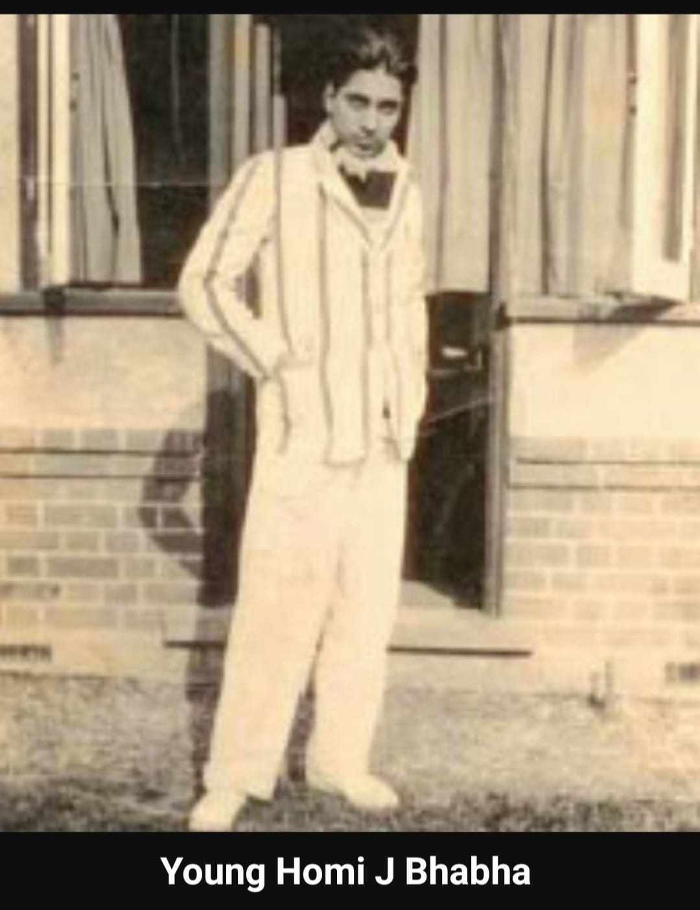

Childhood
Homi Jehangir Bhabha was born on 30 October 1909 into a wealthy Parsi family comprising
Jehangir Hormusji Bhabha, a well-known lawyer, and Meherbai Framji Panday. He received
his early studies at Mumbai's Cathedral and John Connon School. Homi Jehangir Bhabha's
upbringing instilled in him an appreciation for music, painting and gardening. He often
visited his maternal aunt Meherbai Tata, who owned a Western classical music collection.
His tutor in sketching and painting was the artist Jehangir Lalkala. At seventeen, his self-
portrait won second place at the prestigious Bombay Art Society's exhibition. Tending to a
terrace garden of exotic plants and cross-bred bougainvillea and roses, he was an expert on
trees, plants and flower. He
showed signs of precocity in the sciences. As a child, he spent hours playing
with Meccano sets, and was fond of building his own models rather than following the
booklets that accompanied the sets. By fifteen, he had studied general relativity.
Credits :- Arnav Arya
History
👉🏽Homi J. Bhabha, born on October 30, 1909, was an Indian nuclear physicist who played a crucial role in India's nuclear research and development. He is often referred to as the "father of the Indian nuclear program."
👉🏽Bhabha studied at the University of Cambridge and earned his doctorate in nuclear physics in 1935. He made significant contributions to the field of cosmic radiation and postulated what is now known as the "Bhabha scattering."
👉🏽After returning to India, he became actively involved in the country's scientific community. In 1945, he founded the Tata Institute of Fundamental Research (TIFR) in Mumbai, which became a prominent institution for research in various scientific disciplines.
👉🏽Bhabha was instrumental in convincing the Indian government to establish the Atomic Energy Commission (AEC) in 1948. Under his leadership, India's nuclear program gained momentum, leading to the establishment of the Atomic Energy Establishment, Trombay (now known as Bhabha Atomic Research Centre or BARC) in 1954.
👉🏽Tragically, on January 24, 1966, Dr. Homi J. Bhabha died in an air crash near Mont Blanc in France. Despite his untimely demise, his contributions to science and his vision for India's nuclear program left a lasting impact on the nation's scientific progress. He is remembered as one of India's greatest scientists and an advocate for peaceful uses of nuclear energy.
Credits :- Arnav Rao
Major Contributions and Achievements
👉🏽Bhabha’s major contributions included his work on the Compton scattering, the
reprocess, and the advancement of nuclear physics.
👉🏽Bhabha also motivated research in electronics, space science, radio astronomy, and micro-biology.
👉🏽Bhabha played a vital role in convincing the then Prime Minister of India, Pandit
Jawaharlal Nehru ji to start the nuclear program.
👉🏽In 1944, he independently conducted research on nuclear weapons.
👉🏽In 1945, Bhabha established the Tata Institute of Fundamental Research in Bombay.
👉🏽After 3 years, he became the first chairman of the Atomic Energy Commission. Later, he was appointed as the director of the nuclear program to develop nuclear weapons by Nehru.
👉🏽In 1955, he served as the President of the United Nations Conference on the
Peace Uses of Atomic Energy in Geneva, Switzerland.
👉🏽While working on cosmic rays, Homi Bhabha developed a mathematical model that explains how high-energy particles interact with matter.
👉🏽Bhabha created electron-positron scattering in 1935 and described it in Royal Society, Series A,” which was later titled “Bhabha Scattering” in his honour. Homi Jehangir Bhabha established AEET in January 1954 as a diverse research programme crucial to India's nuclear programme.
Credits :- Aarna Narang And Jaishree Aggarwal
Accomplishments
👉🏽Bhabha's contribution to the development of atomic energy made him a significant figure in international scientific circles. Under his guidance, SLV-III successful launched the Rohini's satellite in 1980. Known as the Father of Nuclear Research in India, Homi Jehangir Bhabha was an Indian nuclear physicist and the founding director of physics at the Tata Institute of Fundamental Research (TIFR).
The publication he released for his doctorate, “The Absorption of Cosmic Radiation” offered an explanation of the absorption features and electron shower production in cosmic rays. This research paper helped Bhabha receive the Isaac Newton Studentship in 1934 for three years. The following year, he completed his doctoral studies in theoretical physics under British physicist and astronomer Ralph H. Fowler.
👉🏽In 1935, Bhabha published “Proceedings of the Royal Society, Series A” in which he invented electron-positron scattering which was later renamed “Bhabha Scattering” in his honor. Dr. Homi Jehangir Bhabha formulated a strategy of focusing on extracting power from the country’s vast thorium reserves rather than its meager uranium reserves. This thorium-focused strategy was in marked contrast to all other countries in the world.
👉🏽He was the founding director of the Bhabha Atomic Research Centre. TIFR and BARC served as the cornerstone of the Indian nuclear energy and weapons programme. He was the first chairman of the Indian Atomic Energy Commission and secretary of the Department of Atomic Energy. By supporting space science projects which initially derived their funding from the AEC, he played an important role in the birth of the Indian space programme.
Credits :- Asmita Prasad
University Studies
👉🏽Though he passed his Senior Cambridge Examination with honours at the age of fifteen, he was too young to join any college abroad. So, he enrolled in Elphinstone College. He then attended the Royal Institute of Science in 1927, where he witnessed a public lecture by Arthur Compton, who would win the Nobel Prize in physics the next year for his 1923 discovery of the Compton effect. Bhabha later said that he first heard of cosmic rays, the subject of his future research, at this lecture.
👉🏽The following year, he joined Gonville and Caius College of Cambridge University. This was due to the insistence of his father and his uncle Dorabji, who planned for Bhabha to obtain a degree in mechanical engineering from Cambridge and then return to India, where he would join the Tata Steel mills in Jamshedpur as a metallurgist.
Credits :- Aanvika Prasad
Pictures For Extra References
        